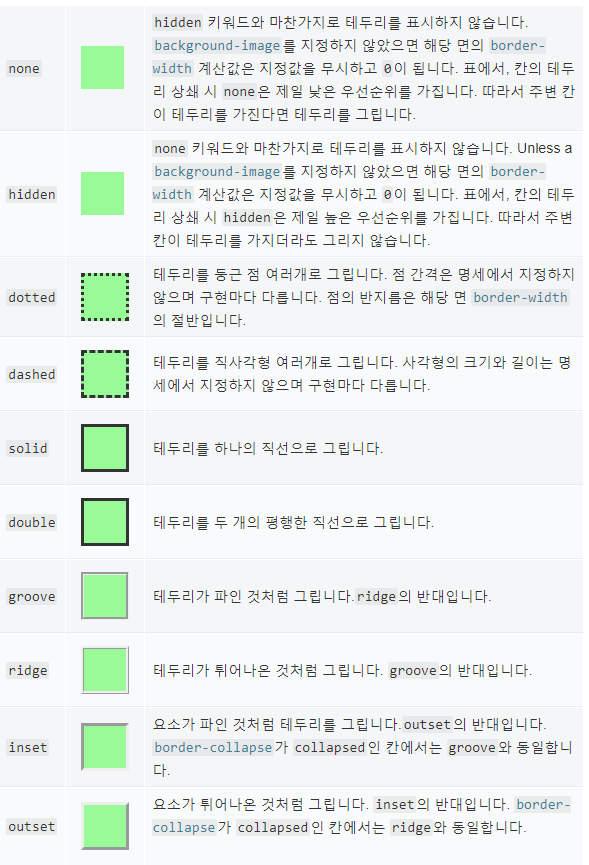
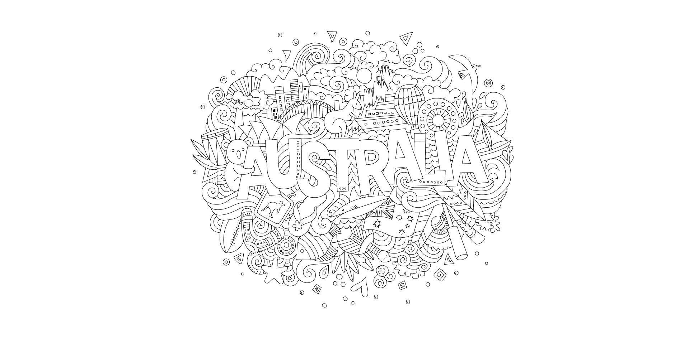
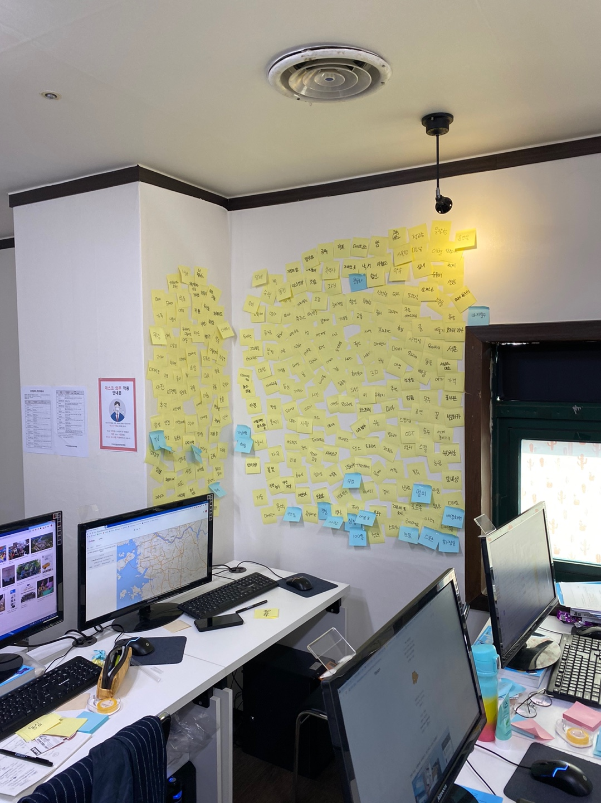

사이트
상업적으로 이미지를 사용가능한 사이트 :https://unsplash.com/
컬러 :https://materializecss.com/color.html
폰트 다운 : https://noonnu.cc/
엔티티 코드 사이트 : https://entitycode.com
따로 공부할수 있는 사이트 : https://wtss.tistory.com/category/SITE/01%20WEBSTANDARD
브라켓 단축키 사이트 : https://docs.emmet.io/cheat-sheet/
현재 있는 사이트를 한눈에 보는 사이트 : https://www.dbcut.com/bbs/index.php
이미지 편집 프로그램 선호도: https://uxtools.co/survey-2019
다음 웹 표준 사이트 : http://darum.daum.net/
네이버 웹 표준 사이트 : https://nuli.navercorp.com/
웹 표준 연구소 : https://www.wah.or.kr:444/
웹디자인 기능사 기출 문자 사이트 : https://www.gunsys.com/q/index.php?midCode=1213
Bootstrap : https://getbootstrap.com/
마우스 오버 샘플 사이트 : https://tympanus.net/Development/HoverEffectIdeas/
배경색 참고 사이트 : https://webgradients.com/
HTML5 Qutilner ( 반응형 검사 사이트) : https://gsnedders.html5.org/outliner/
목업디자인 사이트 : https://www.mockupworld.co/
다른 새로운 코딩 프로르램 다운 사이트 ( 로그인 필수): https://codepen.io/
비주얼 스튜디오 ( 코딩 프로그램) : https://visualstudio.microsoft.com/ko/
폰트 어썸(웹 아이콘) 사이트 : fontawesome.com
코딩으로 도형만들기 참고 사이트 : css-tricks.com/the-shapes-of-css
자바스크립트 이미지 슬라이트 참고 사이트 : kenwheeler.github.io/slick
흔적남기기 참고 사이트(disqus) : https://disqus.com
참고 사이트( github) : hhttps://github.com
3월
20.03.09
오리엔테이션
필요 프로그램 설치
- 닷홈
- 포토샵
- 파일질라
- 일러스트
- 브라켓
홈페이지 주소만들기
페이지 만들기
포토샵 사진 편집
포토샵 편집에 필요한 기본적인 단축키
- 새 파일 : Ctrl + N
- 저장 : Ctrl + S
- 웹 저장 : Ctrl+Shift + Alt +S
- 선택영역 변형 : Ctrl+T
20.03.11
기본 이론
HTML 의 정의 : 홈페이지 의 골격
CSS 의 정의 : 디자인 (근육과 피부)
브라켓 필요 프로그램 설치(초보 필요)
- Emmet : 단축키/ 자동화
- Custom Work : 상단 탭 메뉴 기능
- Beaurfy : 코드 정렬
- Indent Guides : 코딩 라인 가이드
단축키
- 4칸 띄우기 : Tab
- 뒤로 4칸 : Shift + Tab
- 전체 선택 : Ctrl + A
- 줄 복사 : Ctrl + D
- 여러줄 만들기 : 속성>*+갯수 + tab ex) ul>li*10 + tab
포토샵 샘플이미지 만들기
' a ' 는 클릭할수 있는 파일을 만드는것을 의미
' # ' 는 id를 의미
20.03.12
코딩
tab 의 중요성! 저장 필수!
onedrive 다운로드 (어느 컴퓨터에서나 자신이 한 코딩 사용 가능)
코딩 간단한 단축키
- 처음 시작 : ! + tab (기본 코딩 틀 자동 완성)
- 줄 복사하기 : Ctrl + D (까먹지 말자!!)
자동화활용하기!!
- 속성의 이니셜+tab ex) p /p = p + tab
- 속성의 이니셜+ 속성값 +tab ex) width: 900px; = w900+ tab
복사하는 습관 (오타를 줄이기 위함)
css 속성 종류
- font- size
- Text-align
- Height
- Width
- Padding
- Margin
브라우저와 연동이 되는지 알아봐야 한다.
브라우저 종류
- 웨일
- 파이어폭스
- 엣지
- 오페라
- 크롬
설치해야할 브라우저
디자인 공부에 참고 할 사이트
- 크롬 브라우저 실행
- 앱 스토어에서 muzli, Surfit 설치
code 의 사용법 : 빨강색 강조 할때 사용
20.03.13
가로 표시를 페이지에 노출하는 방법
- 코딩할때 그냥 < , > 을 쓰게 되면 코드로 인식 코드 사이트 보고 사용하고픈 부호 찾는다.
엔티티 코드 사이트 : https://entitycode.com/
float : 옛날 방식 코드
clear: float의 성질을 차단해주는 코드
따로 공부할수 있는 사이트 : https://wtss.tistory.com/category/SITE/01%20WEBSTANDARD
2020.03.16
브라켓 단축키 사이트 : https://docs.emmet.io/cheat-sheet/
wrap: 전체를 감싸는 태그
text-transform (* 한글에서는 의미 X)
- text-transform : none; : 입력된 그래도 출력
- text-transform : capitalize; : 단어의 첫번째 글자를 대문자로 변경
- text-transform : uppercase; : 모든 글자를 대문자로 변경
- text-transform : lowercase; : 모든 글자를 소문자로 변경
- text-transform : initial; : 기본값으로 설정
- text-transform : inherit; : 부모요소의 속성값을 상속
line-height: 글줄 사이의 수직 여백을 조정하여 글의 가독성을 높이기 위해 사용
- 퍼센트값 지정 ex) line-height: 120%;
- 길이 단위 값 지정 ex) line-height: 20px;
- 숫자 값 지정 ex) line-height: 1.3;
width/height : 요소의 너비와 높이을 지정
- width/height : auto; : 기본값 ( 브라우저가 너비와 높이를 계산)
- width/height : length; :너비와 높이를 부동 소수점 숫자 뒤에 절대 단위 지정자(cm, mm, in,pt,pc) 또는 상대 단위 지정자 (em, ex,px)가 오는 값으로 지정
- width/height : % ; : 너비와 높이를 퍼센트로 폭을 적용
- width/height : inherit; : 부모요소로부터 값을 상속
background-color
- # :색상코드
- rgb( 색상코드 상단에 있는 번호 ) : (추가 a :투명도 ex) 0.0 투명도 X)
ol 과 ul 의 차이점
- ul : 정렬
- ol : 숫자 정렬
id = # / class = .
레이아웃 05 직접 만들어 보기(! 순서가 중요 그래야 원하는 만큼 조절할수 있음!)
css 색상
- RGB모드/CMYK모드
- 16진수 표기법
- 색상이름 표기법
- RGB와 RGBA 표기법
- HSL와HSLA 표기법
포토샵 편집시 한 단어 이미지화 : 글자 레이어를 오른쪽 클릭 rasterize layer 선택
20.03.17
2D 그래픽디자인(기초) 포토폴리오 시험
GTQ 기출문제 풀어보기
코딩 이해하기
코딩 간소하게 하기
- container 사용 방법
- width/ height : 100% 가 기본값이면
크롬 - 구글 웹스토어 설치 하면 편리한 것
- Web Dvevloper
- Full Page Screen Cepture
- Muzli2 - Stay Inspired
- Surfit.io - 앞선 디자이너를 위한 시작페이지
웹디자인 하면서 참고할 만한 사이트(현제 있는 사이트를 한눈이 볼수 있음)
- https://www.dbcut.com/bbs/index.php
웹디자인 기능사 기출문제
외워야 하는 문제(오답노트)
- E-mail 송신시 사용 되는 프로토콜 : SMTP
- 게슈탈트의 시각의 관한 법칙
- 근접의 원리
- 유사의 원리
- 연속의 원리
- 쓴맛을 나타내는 색상 : 파란색
- TCP/IP 프로토콜의 구성 계층
- 응용 계층
- 전송 계층
- 인터넷 계층
20.03.18
코딩으로 표만들기
편집 프로그램 선호도(한눈에 볼수 있는 프로그램):https://uxtools.co/survey-2019/
table : 표를 생성하는 가장 상위의 태그
thead : 상단의 컬럼을 설명하는 제목들을 그룹화한 영역
tbody : 테이블의 메인 콘텐츠에 해당하는 영역
table-bordered : 테두리선을 표시하는 방법
table- striped : 짝수행 홀수행 배경색을 변경 태그
table-hover : 마우스 포인터을 올리면 배경색을 변하게 하는 태그
tr : table row 의 약자 가로줄 생성
td : table data 의 약자 내용태그
th : table haed의 약자 표의 제목 (글꼴이 굵어짐)
rowsper:세로 셀 병합 태그
colsper - 가로 셀 병합 태그
20.03.19
코딩
UTF-8 을 전세계 언어를 지원하는 코드라 생각하면 된다
웹 접근성과 웹표준성 차이점을 알아야 한다.( !!면접에서 가장 많이 하는 질문중 하나!!)
상대주소와 절대주소
스킵 네비게이션
border : 테두리 색상을 설정
주석 단축키 : Ctrl + /
누구나 알아보기 쉽게 코딩하는 것이 중요 (나만알아보기 편하면 X)
일러스트/ 포토샵 ( 컨트롤하는 방식이 조금 다를수 있음)
- 포토샵 : 비트맵 점으로 이미지 표현
- 일러스트 : 백터 좌표로 이미지 표현
테이블 속성 정리
border : 테이블 경계선 굵기를 지정 (예 : border="10")
bgcolor : 표의 색상을 지정 (색상이름 , 색상코드)
width: 너비 지정 (px , %)
height : 높이 지정 ( px , % )
cellpadding: 셀의 경계선 사이의 여백 지정
cellspacing :셀과 셀사이의 여백
align: 셀의 가로줄을 오른쪽, 왼쪽 중앙 등을 정렬
valign: 셀의 세로줄의 위 중앙 아래 를 정렬
20.03.20
백그라운드 정리 (속기법)
(ex)
background-image: url(../img/header_bg.jpg); background-repeat: repeat-x;
background:
url(../img/header_bg.jpg) repeat-x;
웹디자인기능사 기출문제 풀이
h1~6 태그는 HTML 문서에서 제목(heading)을 정의할 때 사용
숫자가 낫을수록 중요한 제목을 정의
20.03.23
홈페이지 만들기
다음 웹표준/ 네이버 웹표준
다음 웹표준 : http://darum.daum.net/
네이버 웹표준 :https://nuli.navercorp.com/
이미지 표현방법
태그로 표현하는 방법과 background 속성으로 표현하는 방법
웹 접근성 인증 마크 사이트 : https://www.wah.or.kr:444/
띄어쓰기의 중요성 : 띄어쓰기도 잘 봐야 한다.안되있을 경우가 인식하지 못함
'ul>li*갯수>a[#]' 브라켓에서만 되는 속기법 다른 프로그램은 'ul>li>a[href[#]' 이렇게 쓸 수도 있다.
last-child : 마지막 박스
overflow :요소내의 컨텐츠가 너무 커서 요소내에 모두 보여주기 힘들때 그것을 어떻게 보여줄지를 지정하는 태그
overflow:visible: 기본값 넘칠 경우 컨텐츠가 상자 밖으로 보여짐overflow:hidden: 넘치는 부분은 잘려서 보여지지 않음overflow:scroll: 스크롤바가 추가 되어 스크롤할수 있음 (가로 세로 모두 추가 가능)overflow:auto: 컨텐츠 량에 따라 스크롤바를 추가할지 자동으로 결정 (별도로 추가 가능)
웹 폰트 사용 방법 : 구글 경우 원하는 폰트 지정 후 오른쪽 'remove this style' - 'Embed' - 첫번째 링크 복사 - 코딩에 따로 작성한 웹폰트쪽에 붙이기- 두번째 링크 복사 - 폰트를 적용 시키고 싶은 곳에다 링크 붙이기!
a.hover : 링크에 마우스 포인터를 올려놓았을때
index 알아보기
- z- index
- text-index
20.03.24
( .column.col$*6>h3+p ) + Tab 속기법

$는 순서대로 나온다. 예) ... 1
$$는 순서대로 나온다. 예) ... 01
일러스트 라이브 페인트
vertical-align CSS 정리하기
20.03.25
overflow
text-overflow
white-space
strong
웹디자인기능사 기출문제 사이트 : https://www.gunsys.com/q/qpass_takeExam.php?examUid=501
웹디자인 기능사 기출문제 (15.07.19) 오답 노트
- 색의 3 속성 중 사람의 눈이 가장 예민하고 강하게 반응하는 대비 : 명도대비
- 색의 주목성에 대해 설명
- 명시도가 높으면 색의 주목성이 높다.
- 채도 차이가 클수록 주목성이 높다.
- 빨강은 초록보다 주목성이 높다.
- 디자인의 원리 중 비례에 대해 설명
- 부분과 부분, 부분과 전체에 균형이 잡혀 있음을 말한다.
- 조형을 구성하는 모든 단위의 크기를 결정한다.
- 객관적 질서와 과학적 근거를 명확하게 드러내는 구성 형식이다.
- 1,2,4,8,16...... 과 같이 이웃하는 두 항의 비가 일정한 수열 : 등비수열
- 자연에서 쉽게찾을수 있고 온화함이 있지만 때로는 단조로움을 주는 디자인 원리: 유사조화
- LCD LED 조명등에 활용되는 색의 혼합방식 : 가산혼합
- 서로 다른 부분의 조합에 의해 균형감을 잃지 않은 상태로 대립에 의한 극적효과와 긴장감을 줄수 있는 디자인 원리 : 대비
- 도로의 가로등 및 난간, 고층 빌딩의 창문 크기 등을 원근법을 적용하여 표현하고자 할때 표현 요소들 사이에 일정한 단계의 변화가 나타나도록 하는 디자인 원리 : 점증
- 디자인의 조건 중 의자를 디자인할 경우 사용자의 신체치수와 생김새, 체중이나 감촉에 대한 재료와 구조의 상태가 적합한지 등을 고려하는 것 : 합목적성
- 2차원적 제품 디자인 분양
- 텍스타일디자인
- 벽지디자인
- 인테리어 직물디자인
- 디자인의 의미
- 넓은 의미로 심적 계획이다.
- 좁은 의미로는 보다 사용하기 쉽고 안전하며, 아름답고, 쾌적한 생활 환경을 창조하는 조형 행위이다.
- 사전적 의미로 라틴어의 'designare'와 같이 '지시하다, 계획을 세우다, 스케치를 하다' 등의 의미로 사용된다.
- HTML 에서 사용 되는 글자 모양의 관련된 태그에 관한 설명
- B .../B태그는 강조된 글자 모양으로 표시하기 위한 태그이다.
- clte.../clte태그는 짧은 인용구를 표시할때 사용하는 태그이다.
- code.../code태그는 프로그램 코드 글자 모양응로 표시할때 사용하는 태그이다.
- 인터넷 익스플로러 버전을 확인하고자 할 때 선택해야 할 메뉴 : 도움말
- 인터넷 서비스
- FTP
- Telnet
- 인터넷의 시조이며, 미 국방성이 군사 목적으로 UCLA 스탠포드 대학 등이 보야한 컴퓨터를 네트워크로 연결하는 것 : ARPANET
- 전자메일 서비스에 연관된 프로토콜(Protocol)
- IMAP
- POP3
- SMTP
- 자바스크립트로 배경색을 파란색으로 자정하려면" docoiment.bgColor = " blue"
- 수신된 신호를 증폭, 회복시켜 재전송하여 전송거리를 확장하는 네트워크 장비 : Repeater
- 여러개의 검색엔젠에서 저오를 찾은 ㄷ음 중복으로 검색된 정보는 하나로 통일하고 자체 순위 결정 ㅏㅇ식에 의해 가장 관련성이 높은 순으로 출력해 주는 것 : 메타 검색엔진
- BODY태그에서 사용할 수 있는 속성과 그 의미
- BGCOLOR= 배경색을 지정한다.
- TEXT= 일반 글자색을 지정한다.
- LINK = 링크로 설정한 글자색을 지정한다.
- 자바스크립트 소스를 헤드(head)태그 안에 삽입 시 브라우저에서 적용되는 결과
<script language = " javascript">
<!-- alert("Welcome to the Morning Glory")'//-->
</script>
: 페이지가 열릴 때 자동으로 Welcome to the Morning Glory라는 문구가 있는 메시지 창이 뜬다. - 정보 검색 연산자 : OR( 연산자 좌우 검색어 중 하나라도 들어 있는 자료를 찾는다. )
- OSI 7계층
- 세션 계층.
- 전송 계층.
- 응용 계층.
- 웹 페이지 제작시 사용 되는 내비게이션(Navigation Sutructure) 구조의 유형
- Sequential structure
- Hierarchical structure
- Grid structure
- 컴퓨터 그래픽스의 발달 과정 중 세대별 발전 단계
- 제 1세대 : 진공관, 리플레시 형 CRT
- 제 2세대 : 집적회로, 벡터 스캔 CRT
- 제 3세대 : 고밀도 집적회로, XY 플로터
- 애니메이션 종류 중 배경은 그대로 두고 캐릭터만 움직이도록 하는 기법으로 투명 필름 위에 수작업으로 캐릭터를 채색한 후 배경 위에 놓고 촬영 및 편집하는 기법 : 셀 애니메이션
- 웹 사이트 제작에서 사용자 인터페이스 설계 시 고려 사항
- 최단 시간에 사이트를 방문한 목적을 이해할 수 있도록 인터페이스를 설계한다.
- 화면을 스크롤 했을 때 링크 버튼이 보이지 않는 일이 없도록 설계한다.
- 누가 보더라도 쉽게 사용법을 알수 있도록 사용자 편의성을 제공하도록 설계한다.
- 사용자가 그래픽을 통해 컴퓨터와 정보를 교환하는 작업환경 : GUI (Graphic User Interface)
- 컴퓨터 그래픽스 시스템의 출력장치
- 그래픽 정보를 외부로 출력하는 것을 말한다.
- 빔 프로젝터는 인쇄된 사진이나 문자 혹은 영상을 확대투영해주는 광학 장치이다.
- 처리장치를 통해 처리된 결과는 출력장치를 통해 나타낸다.
- - 점묘와 같이 제한된 수의 색상들을 사용하여 시각적으로 섞어서 만들어 내는 것이다.
- 적은 수의 색상의 반복으로 그래픽 파일의 용량을 줄인다는 장점이 있다.
: 디더링 - 웹 사이트 개발과정
- 프로젝트 기획 : 목표 설정, 시장조사, 개발전략 수립
- 웹 사이트 기획 : 사이트 콘셉트 정의 자료수집 및 분석
- 웹 사이트 디자인 : 콘텐츠 제작 및 배치, 내비게이션 구축
- 웹 사이트의 가상경로를 예상하여 기획하는 것으로 웹 사이트의 설계도이며 구체적인 작업 지침서 역할을 하는것 : 스토리보드
- 파일 포멧 중 LZM(Lempel-Ziv-Welch)라고 알려진 압축 알고리즘을 사용하며 사진이미지 보다는 색상이 단순한 그래픽에 더 효과적인 파일 포멧 : GIF
- 고해상도의 원본 이미지의 포맷을 변경해서 저장하였을 경우파일 용량이 가장 큰것 : BMP
- 안티 앨리어싱 (Anti-Aliasing) : 저해상도의 곡선이나 사선을 표현할 때 생기는 계단현상을 완하하기 위히 사용되는 기법이다.
- 벡터 방식
- 베지어(Bezier)라는 곡선으로 이루어져 있다.
- 이미지를 확대/축소하여도 그림이 거칠어지지 않는다.
- 미세한 그림이나 점진적인 색의 변이를 표현하기 어렵다.
20.03.26
position: absolute : 마음대로 움직일수 있다
position: relativee : absolute의 기준이 된다
border-style: 한 개에서 네 개의 값을 사용해 지정 가능
- 한 개의 값은 모든 네 면의 테두리 스타일을 설정
- 두 개의 값을 지정하면 첫 번째는 위와 아래, 두 번째는 왼쪽과 오른쪽 테두리 스타일을 설정
- 세 개의 값을 지정하면 첫 번째는 위, 두 번째는 왼쪽과 오른쪽, 세 번째 값은 아래 테두리 스타일을 설정
- 네 개의 값을 지정하면 각각 상, 우, 하, 좌 순서로 테두리 스타일을 지정 (시계방향)
속성값
마우스 오버 샘플 사이트 :https://tympanus.net/Development/HoverEffectIdeas/
GTQ 문제 풀이
탭 메뉴 광고 페이지 공지사항 만들기
20.03.27
웹 기능사 필기
웹 기능사 필기시험 모의고사 및 GTQ 모의고사 ( 손이 너무 느리다. 분발하자)
20.03.30
코딩 / 포토샵
새로 배운 태그
- address
- form
- fieldset
- legend
- input
- label
- button
mockup 디자인
목업 디자인을 위한 이미지 사이트포토샵을 이용하여 컴퓨터, 핸드폰 플레임을 원하는 사진으로 바꿀수 있는 디자인
브라켓 말고 다른 코딩 프로그램 ( 개발자라면 다른 코딩 프로그램으로도 사용해봐야 한다.)
비주얼 스튜디오
20.03.31
반응형 레이아웃
시멘틱 태그
미디어 쿼리
html5 새로 나온 태그 와 사용하지 않아 없어진 태그 조사
포토샵 GTQ 모의 시험 ( 시간 단축 필요 연습,,,,,, 시간이 너무 오래 걸린다. )
4월
20.04.01
반응형 레이아웃 심화
meta name 의 대해
새로 나온 태그 ( 정리 할 것)
- 조건식주석
- html5shiv
- < meta name="viewport" content="width=device-width, initial-scale=1.0">
반응형 웹 페이지
웹페이지 검사 사이트일러스트
기존 이미지의 원하는 글자와 색 디자인 하기
- 위 그림을 불러와 Ctrl + 2 눌러 움직일수 없게 고정후 펜툴로 하나하나 그려준다. ( 글자가 쓰여저 있는 부분은 하지 않는다.)
20.04.02
반응형 레이아웃 심화
앞으로 만들어갈 반응형 레이아웃
예시 사이트배경색 참고할만한 사이트
배경색 사이트새로운 코딩 프로그램
코드 펜- 구글 계정 아이디 : float2147@gmail.com
20.04.03
반응형 레이아웃 심화
UIUX의 대한 각자의 생각 발표하기
- 발표 내용을 보고 느낀점...
- 생각하지도 못한 아이디어가 많이 나왔다. 요리,, 양파,안경,고속도로, 버스등등등... 참신하구만
20.04.06
코딩
폰트 어썸 사이트 : fontawesome.com
코드펜 활용하기 box-shadow 정리
코딩으로 도형만들기 참고 사이트 : css-tricks.com/the-shapes-of-css
자바스크립트 기초
자바스크립트 변수
비주얼 스튜디오 open in browser 설치
20.04.07
반응형 웹페이지 nav 코딩
transition 태그
box-sizing 정리
20.04.08
ncs 사이트 제작
오전 반응형 사이트 notice 게시판 만들기
오후 ncs 사이트 제작에 필요한 조사
설문조사 와 친화도법 과정
20.04.09
반응형 코딩
반응형 웹 사이트 figure, figcaption 태그 css 정리
오후 프로토타입자료조사 ppt 발표
20.04.10
언어코드
- lang 언어 : 웹문서(전체 , 일부)에 관련 언어 지정하는 속성
- 검색엔진 및 부라우저 지원 목적 ( 웹 접근성)
- 전역 속성이라 모든 요소에 사용 가능
- 국제표준화기구 언어 약어 정의 규정에 따름
- 한국어 : ko
- 영 어 : en
- 중국어 : zh
- 일본어 : ja
- 독 일 : de
- 프랑스 : fe
- 스페인 : es
- 러시아 : ru
웹디자인기능사 실기 공부
20.04.13
오전 자바스크립트
오후 일러스트
오전 자바스크립트
slick : 슬라이드 효과 참고사이트
NCS 국가 직무 능력 표준 디자인 구성요소 설계 정리 (티스토리)
일러스트 저번에 작업하던 스케치 작업 완료후 색칠하기 (은근 시간이 많이 걸린다.)
20.04.14
자바 스크립트 변수와 배열
자바스크립트
- 대소문자 구분 ( 오타 조심해야 할것.. 찾기 힘들다)
- 처음 시작할때 '$'로 시작한다 (꼭 '#'가 id 이고 '.'이 class 인것 처럼)
- 세미콜론 (;) 주의할것 (끝마칠때 꼭 세미콜론을 쓰도록 하자)
- 주석 표시가 다르다 ( 중접으로 사용하지 못한다. )
- html인 경우 : <!-- 주석입니다. -->
- js 인 경우 :
- //한줄 주석
- /* 여러 줄
* 주석입니다.
*/
변수 : 하나의 데이터를 저장하는 저장소
배열 : 두개 이상의 데이터를 저장하는 저장소
반응형 웹사이트
사이트에서 이미지를 클릭했을때 크게 띄우는 방법
20.04.16
코드펜
웹 퍼블리셔 면접시 많이 물어 보는 질문중 컨텐츠 요소를 가운데 오게 하는 방법에 대해 정리
display: flex; justify-content: center; align-items: center; 알아보기
코드 펜으로 도형 애니메이션 효과 주기
20.04.17
웹디자인 실기 연습하기
죽어라 연습하자!!!
20.04.20
코드펜으로 반응형 페이지 만들기
미니언 반응형 페이지 만들어 보자
@include : center ( pseudo ) 에 대해 알아 봅시다.....
오후 ncs 심미성구성요소 설계 티스토리에 올리기
사이트 만들기 팀플 작업
20.04.21
Tentacle animation
실제 기업에서 사용하고 있는 페이지를 포토샵으로 디자인 그리디작업
그리디란... 균형있는 사이트를 만들기 위한 가이드???
20.04.22
마우스 오버 인택트
마우스를 오버하였을때 나타나는 여러가지 효과
오후 ncs 영상 작업
20.04.23
자바스크립트
자바스크립트 반복문
- whlie문
- do whlie문
- for문
- 중첩for문
오후 내일 볼 자격 시험 공무하기
20.04.24
웹디자인 필기 시험
20.04.27
마우스 오버 효과 반응형 사이트에 적용시키기
코드펜에서 사용했던 거랑 이름이 다르니까 주의해서 대입해보자
백그라운드 정리
사이트 선정 후 사이트 랑 똑같이 코딩해보자
20.04.28
포트폴리오
피그마를 이용하여 포트폴리오 제작 겸 공부하기
- flex :CSS3의 새로운 latout 방식 ( 정렬할 때 많이 쓰임)
- Grid :
20.04.29
농심
Swiper를 이용하여 다양한 슬라이드 효과를 줄수 있다.
농심 사이트에 적용시켜 보자
연휴동안 배움나라 인강 듣기 / 생활 코딩 자바 스크립트 듣기
5월
20.05.06
농심 사이트 만들기
제이쿼리 사이트를 이용하여 사이트에 적용 시키기
제이쿼리를 알아보자
제이쿼리를 사용하기 전 기본적으로 html과 연동시켜줘야 한다.
- 선택자
- 기본
- 계층
- 속성
- 기본 필터 선택자
- 내용 필터 선택자
- 보임 필터 선택자
- 자식요소 필터 선택자
- 폼 요소 필터 선택자
피그마를 이용하여 서류작업하기
20.05.07
제이쿼리를 알아보자
탐색(Traversing) 속성 알아보기
(코드펜) 탭메뉴 스크립트
20.05.08
코드펜스크립트
코드펜 아코디언 메뉴
웹디자인 실기 모의 시험
코드펜에서 만든 아코디언 메뉴를 만들어 모의 시험 사이트에 적용 시켜보자
20.05.11
웹디자인 실기 접수 (수원)
제이쿼리
parallax 여러가지의 효과 포트폴리오 만들때 적용 시켜 봅시다
가장 기본 적인 parallax 효과
20.05.12
코드펜 스크립트 예시
parallax side/hamberger menu 스크립트
20.05.13
농심 메인 화면 마무리 작업
코드펜parallax hidden/Sticky 스크립트
마지막content 마무리 footer 혼자 해보기
농심 서브 페이지 5/20날 까지 조원(3명) 합쳐서 6장 만들기 (한사람당 2페이지 만든다. 잘 할수 있을까?)
20.05.14
메인index 코멘트창 만들기
흔적남기기 참고 사이트깃허브 사이트 회원가입 및 다운
github코드펜 dot 메뉴 만들기
포트폴리오 컨셉 잡기 위해 예시 보기
20.05.15
농심 서브 페이지 만들어 보기
서브 페이지 농심소개(농심기획) / 지속가능 경영 (overvlew)
오늘은 뼈대를 만들기
작업 속도 올리자 제발!!!!!!!!!!
20.05.18
포트폴리오 Parallax 사이트 만들어보기
에니메이션 효과 알아보기
모달효과을 알아보자
svg 에니메이션 효과
20.05.19
에이전시 취업을 위한 포트폴리오 컨셉잡기
웹 퍼블리셔 포트폴리오를 많이 보는게 좋을것 같다.
NCS 시험 포트폴리오에 추가 시킬 사이트 선정후 스케치 및 도안 작업
개인 면담 시간... 메인 블로그 디자인 작업 29일 4시
사람인 잡코리아 이력서 올리기
포트폴리오 컨셉잡기 위한 리서치21일
농심 서브페이지 만들기
20.05.20
svg 애니메이션
- rect
- circle
- polygon
- line, polyline
- path
- clip-path
- SVG-Text Animation1
- SVG-Text Animation2
- SVG-Text Animation3
20.05.21
CSS 7가지 단위
- rem
- vh
- vw
- vmin
- vmax
- ex
- ch
포트폴리오에 쓸 사이트 작업 들어가기( 메가 박스 )
6월
20.
20.
20.
20.
20.
20.
20.
20.
20.
20.
7월
20.
20.
20.
20.
20.
20.
20.
20.
20.
20.